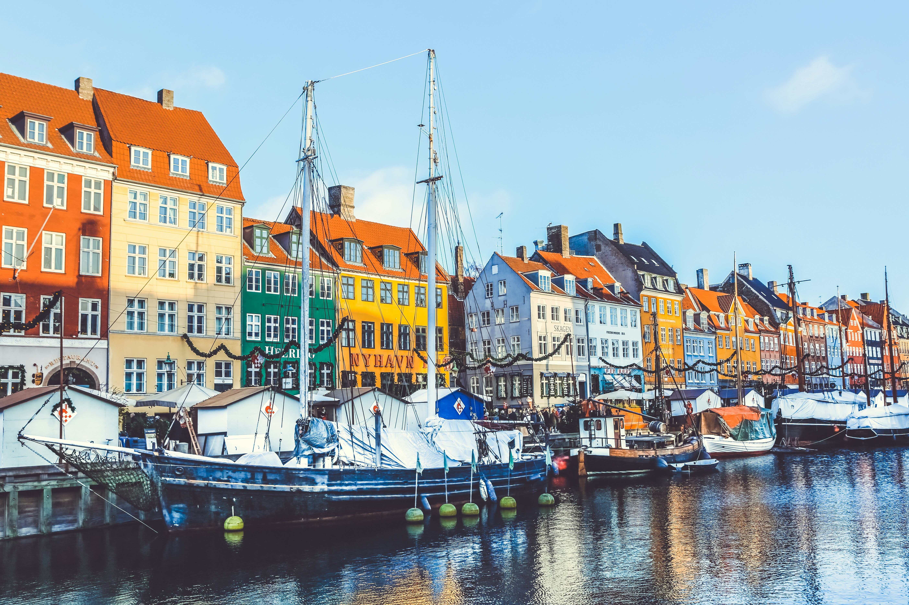

Where to be and when
Day 1 is arrival, settling in, and our first evening together at the Welcome Dinner. Your welcome email confirms the exact details — here's the general shape of the day.
🕔 First group meeting
Please meet in the lobby, ready to leave, at 5:15 PM. We'll then depart together for our Welcome Dinner at Vækst.
Before then is usually arrival and settle-in time — check in (or store bags if you're early), freshen up, and get your bearings at your own pace.
🏨 Hotel check-in
We're based at the AC Hotel Bella Sky Copenhagen in Ørestad — the twin towers on the Copenhagen skyline.
Check-in is typically after 3:00 PM. If you arrive earlier, reception can usually store your main luggage until your room is ready, so it helps to keep essentials in a small day bag.
✈️ Airport transfers and arrivals
Trafalgar offers complimentary Day 1 airport transfers at set times. Please check your joining documents and welcome email for the exact timings and where to meet.
Once you have collected your luggage and come through arrivals, look out for your Trafalgar host — they will be looking out for you too, so just make eye contact and introduce yourself. The meeting point is in the Arrivals Hall, opposite Caffeine.
Complimentary transfers run at set times and cannot be held — if you miss yours, official taxis from Copenhagen Airport are easy to find and the hotel is straightforward to reach.
If you have a private transfer booked through Trafalgar, the details and instructions will be in your joining documents.
🧭 Arrival note
Keep your hotel address, booking details, passport and phone easily accessible on travel day.
If your arrival timing changes significantly, contact the support number in your official documents as soon as possible.
What stays with you
One habit makes travel days much easier: keep the important things in your day bag, not your main suitcase.
🛂 Passport & travel documents
Make sure your passport is valid for at least six months after the tour ends, and travel with the same passport you booked with — ID checks can happen at some venues.
Denmark, Sweden, Finland and Norway are all part of the Schengen Area, so once you're in, you won't hit passport control between countries — the ferry to Helsinki and the drive into Norway are seamless.
✅ Day bag essentials
Your main suitcase goes into the coach hold on travel days and may not be accessible until you reach the hotel. Keep anything you might need during the day with you:
- Glasses, contact lenses or hearing aids
- Medication and prescription items
- Phone, charger and any cables
- Cards, cash and travel money
- A warm layer and waterproof — useful every single day on this route, Arctic Circle included
A useful rule: if you would miss it for a few hours, it belongs in your day bag.

Before you pack
These are the details that tend to make the biggest practical difference — especially on a route this long.
👟 Walking shoes
Cobblestones in Copenhagen, old town streets in Stockholm and Trondheim, uneven Arctic viewpoints, and Lofoten hiking trails if you choose them. Comfortable, well-worn shoes make a genuine difference across the whole tour.
If you are unsure which pair to bring, bring your most comfortable ones.
🌦️ Weather and layers
This route covers more climate variety than any other tour I lead: mild Scandinavian city days in Copenhagen, Stockholm and Helsinki, then noticeably cooler, windier conditions as we push into Finnish Lapland and across the Arctic Circle to the North Cape, Tromsø and the Lofoten Islands.
Layers are essential, not optional. A proper waterproof, a warm mid-layer and a hat worth having even in summer will cover you from Copenhagen to the North Cape and back down to Oslo.
🔌 Power adapters
Four countries, three plug standards to know about. Denmark uses Type K (Type C also fits). Sweden, Finland and Norway all use Type F/Schuko (Type C fits here too). A universal travel adapter is the simplest option for the whole tour.
🧳 Packing
Pack for usefulness rather than volume. This is a one-way tour with regular hotel changes and no long stays until near the end, so lighter luggage is noticeably easier to live with.
We use audio listening devices on walking tours — disposable wired headphones are provided. These are not Bluetooth, so wireless earbuds will not connect. You are welcome to bring your own wired pair if you prefer.
📶 Staying online
If you'd like a simple way to stay connected across all four countries, Trafalgar has partnered with Airalo, a digital eSIM store covering 200+ countries. Use code TRAFALGAR10 for 10% off if you sign up before you travel.
Coverage is generally good even in the Arctic, but can drop out in more remote stretches — around Honningsvåg, parts of Finnmark, and the long drive down to Mo i Rana in particular.
💳 Chip and PIN
In many Scandinavian cities, a Chip and PIN card is effectively required — cash is not always accepted, even for small purchases. If you're unsure whether your card is Chip and PIN, bring a debit card or prepaid travel card as a backup.
The rhythm of it
Nordic Adventure is the biggest Scandinavian route I lead, and it's a one-way journey rather than a loop: twenty days, four countries and seventeen cities, starting in Copenhagen and finishing in Oslo. It doesn't repeat itself once.
We open gently — Copenhagen, then Stockholm reached by crossing the Øresund Bridge into Sweden. From Stockholm we board an overnight ferry to Helsinki, Finland's effervescent capital, before driving north through the Finnish Lakeland to Jyväskylä and Rovaniemi, capital of Finnish Lapland, right on the Arctic Circle.
From there the tour turns properly Arctic. Santa Claus Village, Saariselkä, and on to Honningsvåg — gateway to the North Cape, the dramatic cliff-edge "edge of the world" at Europe's northernmost point. We continue through Alta, Tromsø, and across to the Lofoten Islands, before turning south again: Mo i Rana, Trondheim, and the fjord country of Geiranger and Trollstigen, finishing through Lom and Lillehammer into Oslo.
Two ferry crossings define the rhythm of this trip in different ways: a lively overnight sailing between Stockholm and Helsinki, and short local ferries later on as we work through Norway's northern coastline. Both are part of the adventure, not just transport between stops.
There will be long driving days, especially in the far north, and some early starts. That is simply what it takes to properly see this much of Scandinavia and the Arctic in one trip — and the pay-off, from the North Cape to Lofoten to the fjords, is considerable.
I'll always let you know what's coming up, what's worth having with you for the day, and what you can leave on the coach and not think about yet.
🚌 On the coach
Seat rotation happens daily, and I'll explain the system clearly on Day One.
Snacks are absolutely fine. Just avoid hot food, hot drinks and anything likely to melt, spill or perfume the entire coach by lunchtime. Please keep your seat area tidy — it's a shared space and it makes a real difference to everyone's day.
Seatbelts on whenever you are seated — it's a simple habit that matters.
⛴️ Ferries
Our overnight sailing from Stockholm to Helsinki is a highlight in its own right — bring a small overnight bag with essentials, as your main suitcase travels separately on board.
Later in Norway's far north we take shorter local ferries between Olderdalen and Lyngseidet, and Svensby and Breivikedet — keep a layer handy for time on deck.
🏨 Hotels vary
Across four countries and seventeen cities, hotels range from modern city properties to characterful regional stays — including the traditional Pohjanhovi Hotel on the Kemijoki river in Rovaniemi, and Hotel Havila Geiranger overlooking the fjord.
Air conditioning is not universal, particularly in northern and mountain-region hotels. If your room feels warm, reception can usually help.
🚗 Our Driver
Our Driver covers real distance on this route — Arctic roads, ferry loadings, mountain passes and long stretches of Finnmark coastline all take genuine skill and concentration.
By the end of the tour, most groups have a real appreciation for just how much goes into it.
⏰ Tour timings & inclusions
Our days run to a schedule. Being ready on time — for departures, meals and activities — keeps things on track for everyone in the group.
I'll always let you know what's coming up and what to be prepared for. All we ask is that you're there on time, ready to go.
🔒 Security
Keep your passport, cards and valuables secure and close to you, particularly around transport hubs, ferries and busier city centres like Stockholm and Helsinki.
A small bag that stays close to your body is worth considering on busier sightseeing days.
I use WhatsApp for simple reminders and day-to-day updates while we are travelling. It is optional, but it usually makes the small daily details easier.
- 1Download and set up WhatsApp before you travel if you do not already use it. Download WhatsApp
- 2Save my number — it is in your welcome email, or use the WhatsApp link at the top of this page.
- 3Send me a message with your name so I know you are set up.
If you'd rather not use WhatsApp, that's fine — everything important will still reach you.

A few practical things for later
You do not need to make all of these decisions before we meet. They become much easier once you can see the pace of the tour and what suits you.
⭐ Optional experiences
This is the richest tour I run for optionals, and in my experience they're often what people remember most. Meeting reindeer at a family farm on the Arctic Circle. A husky visit and homemade cake around the fire near Alta. An Arctic cruise past nesting seabirds off Honningsvåg. Tasting Arctic king crab in a remote fishing village. The Viking Museum Lofotr, complete with the world's biggest Viking longhouse. Sailing the Geirangerfjord beneath the Seven Sisters waterfalls. The Fram and Kon-Tiki ships in Oslo. These aren't things that are easy to arrange yourself on a schedule that moves quickly through this much of the Arctic and Scandinavia — on this tour, they're ready to go, transport and entry included, perfectly timed within the day.
I'll walk you through everything as we go. My honest advice? Do them. I've been travelling most of my life, and the times I've passed on something — thinking it was too expensive, or I'd come back another day — those are the ones I still think about. And on a route this far north, you may genuinely not pass this way again.
Unless something really doesn't appeal to you, I'd say yes.
💳 Money & cards
Four currencies on this route: Denmark uses Danish Krone (DKK), Sweden uses Swedish Krona (SEK), Finland uses the Euro (EUR), and Norway uses Norwegian Krone (NOK).
Cards are widely accepted and generally the preferred way to pay — a Chip and PIN card is worth having, since cash isn't always accepted. Small amounts of local cash are still handy for the odd smaller purchase or gratuity.
💶 Gratuities
Some gratuities are already included in your tour price — restaurant staff and hotel porters, for example. Tips for your Travel Director and Driver are separate unless pre-paid, and Local Specialists — the guides who join us in Copenhagen, Stockholm, Helsinki, Oslo and elsewhere — are separate again.
As a guide, average gratuities on this tour are 7 EUR per person per day for your Travel Director, 4.50 EUR per person per day for your Driver, and 2 EUR per person for each Local Specialist. These are given in EUR as a consistent reference across all four currencies, not because you need euros in hand — ask me on tour if you'd rather work in local currency.
This does not need to be solved on the first morning.
Questions before we begin?
Save my contact now, and keep your official joining instructions somewhere easy to find. That is enough for the moment.
Damian Watson
Travel Director · Trafalgar
Phone / WhatsApp
WhatsApp is usually the easiest way to reach me during the trip.
Urgent before departure?
Before the tour begins, I may occasionally be travelling or finishing another tour, but I will always get back to you as soon as I can.
For anything time-sensitive before Day 1, Trafalgar's European Guest Services team is there to help: EuropeanGuestServices@ttc.com or +44 207 620 8900.
Once we are together, things usually become much more straightforward day to day.

Final note
Copenhagen to Oslo, by way of the Arctic Circle, the North Cape and the Lofoten Islands — there's a huge amount of Scandinavia and the far north ahead of us, and I'm looking forward to every part of it. See you in Copenhagen.